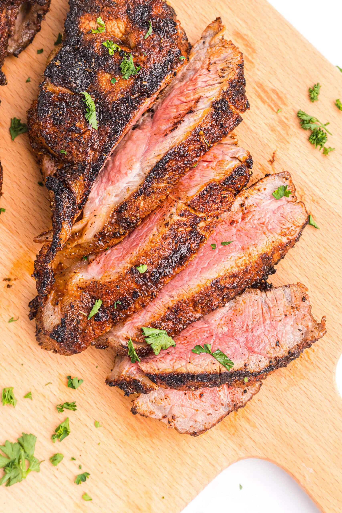

New York Strip

Description
The New York Strip Steak, also known as the "Sirloin Sensation", is a cut of beef from the short loin of a cow. It's known for its rich, beefy flavor and tender texture. It's the perfect cut of meat for anyone looking to impress their date, or for anyone who wants to treat themselves to a fancy steak dinner after a long day of work.
But let's be real, the real reason why the New York Strip Steak is so popular is because it's the steak that makes you feel like a king or queen in the bedroom. It's the steak that says, "I'm not just any ordinary Joe, I'm a steak-eating, New York Strip-loving, boss in the sheets". So go ahead, order that New York Strip Steak medium rare, and enjoy it like the boss you are. Just don't forget to share with your partner, unless of course, you got no bitches (skill issue).
Ingredients:
- New York Strip Steak
- Salt
- Pepper
- Garlic powder
- Paprika
- Thyme
- Olive oil
- Butter (optional)
Instructions:
- Preheat your grill, cast iron skillet, or broiler to high heat.
- Season both sides of the New York Strip Steak with salt, pepper, garlic powder, paprika, and thyme to taste.
- If using a grill, place the steak on the grill grates and cook for 4-5 minutes per side for medium-rare, or longer if you prefer your steak more well done.
- If using a cast iron skillet, heat olive oil in the skillet over high heat. Add the steak and cook for 4-5 minutes per side for medium-rare, or longer if you prefer your steak more well done.
- If using a broiler, place the steak on a broiler pan and place it under the broiler. Cook for 4-5 minutes per side for medium-rare, or longer if you prefer your steak more well done.
- Once the steak is cooked to your desired temperature, remove it from the heat and let it rest for a few minutes before slicing and serving.
- Optional : add a small amount of butter on top of the steak while it's resting to give it an extra richness and flavor, before slicing and serving.
Previous Page